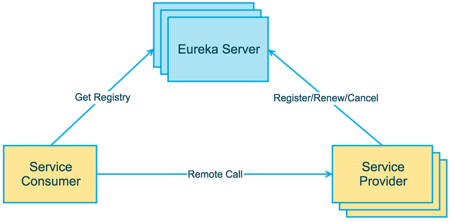

学习Spring Cloud：Discovery
使用 Spring Cloud 服务中心可能遇到的的一些问题。
服务中心
服务中心：Discovery，管理各种服务功能包括服务的注册、发现、熔断、负载、降级等。
解决的问题：大量服务间的相互依赖关系改为由服务中心统一管理。符合低解耦特性。
例如：Ａ依赖Ｂ依赖Ｃ. B 和 C 是具体服务的提供方，Ａ->B->C 依赖关系改为
- A(Discovery Client) ->Discovery Server ->B(Discovery Client)
- B(Discovery Client) ->Discovery Server ->C(Discovery Client)

常见问题
1.保护模式
|
Eureka server 和 client 之间每隔 30 秒会进行一次心跳通信，告诉 server，client 还活着。由此引出两个名词：
Renews threshold：server 期望在每分钟中收到的心跳次数
Renews (last min)：上一分钟内收到的心跳次数。
前文说到禁止注册 server 自己为 client，不管 server 是否禁止，阈值（threshold）是 1。client 个数为 n，阈值为 1+2xn（此为一个 server 且禁止自注册的情况）
如果是多个 server，且开启了自注册，那么就和 client 一样，是对于其他的 server 来说就是 client，是要x2 的
Eurake 有一个配置参数 eureka.server.renewalPercentThreshold，定义了 renews 和 renews threshold 的比值，默认值为 0.85。当 server 在 15 分钟内，比值低于 percent，即少了 15%的微服务心跳，server 会进入自我保护状态，Self-Preservation。在此状态下，server 不会删除注册信息，这就有可能导致在调用微服务时，实际上服务并不存在。
这种保护状态实际上是考虑了 client 和 server 之间的心跳是因为网络问题，而非服务本身问题，不能简单的删除注册信息
stackoverflow 上，有人给出的建议是：
1、在生产上可以开自注册，部署两个 server
2、在本机器上测试的时候，可以把比值调低，比如 0.49
3、或者简单粗暴把自我保护模式关闭
|
参考资料：
1、understanding spring cloud eureka server self-preservation and renew threshold(http://stackoverflow.com/questions/33921557/understanding-spring-cloud-eureka-server-self-preservation-and-renew-threshold)
2、Understanding eureka client server communicationUnderstanding eureka client server communication(https://github.com/Netflix/eureka/wiki/Understanding-eureka-client-server-communication)
3、Eureka never unregisters a service
(http://stackoverflow.com/questions/32616329/eureka-never-unregisters-a-service)
4、http://blog.csdn.net/zzp448561636/article/details/70198878